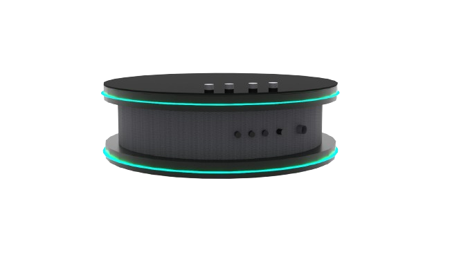

IQ TECH innovations is a company that creates different technological advancements, such as PC addons, AIs and voice assistants. We aim to refine our technology for better use and a more wide range of content that existing technologies do not provide.
The IQ-Versa smart speaker is an AI voice assistant that uses its own Operating system (OS). It can be used to initiate commands like playing a video/song by voice command or through the IQ-Tech App. The smart speaker can also be customisable in several ways, such as the speaker using custom voices(given consent to use) with its inbuilt AI, custom RGB lights to change the colour around the top to show the speaker is listening to you and can be used as a smoke detector. The model will be 5 inch(diameter) X 3 inch(height) and contains add-ons such as a camera module and a wall mount to attach to walls and ceilings.
what our product will look like:
